Pholcidae
Holocnemus
1 espèce en Île-de-France identifiable à vue
Holocnemus pluchei (difficulté 1) LC
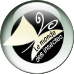


Taille du corps:
5-7 mm (♂) / 5-7.5 mm (♀)
Confusions possibles :
Pholcus
Pholcus
Femelle :
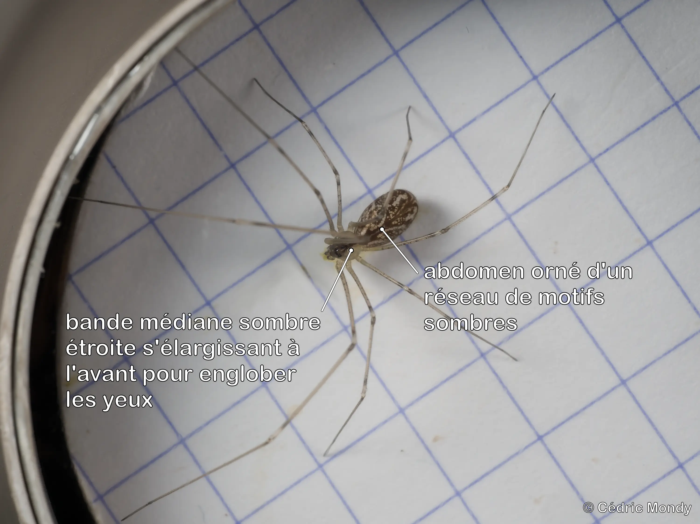
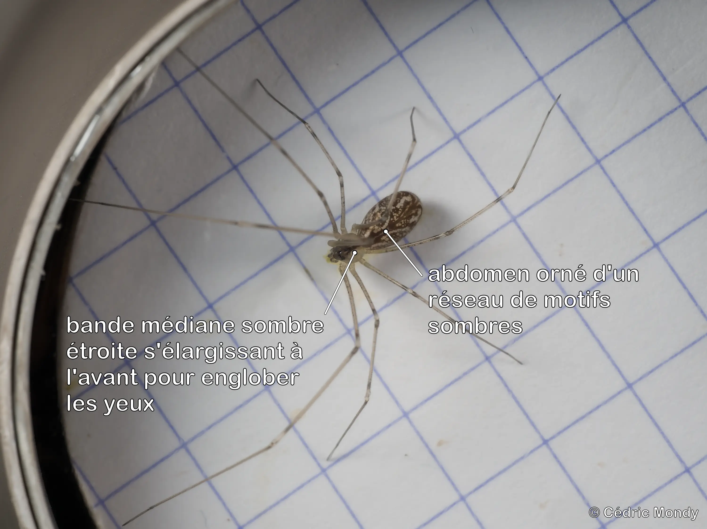

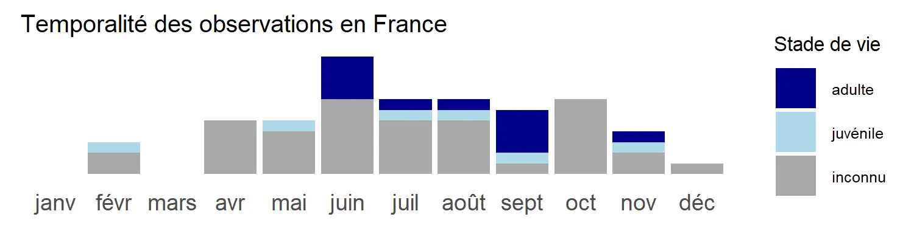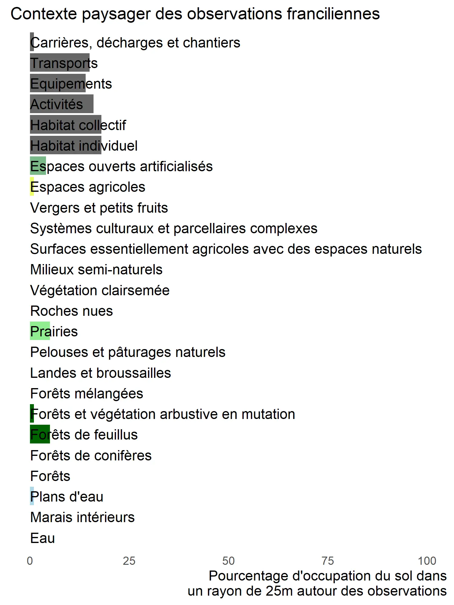
Pholcus
2 espèces en Île-de-France, toutes identifiables à vue
Pholcus opilionoides (difficulté 1) LC
Taille du corps:
4.0-5.0 mm (♂) / 4.0-5.5 mm (♀)
Condition :
photo indispensable pour validation de l’observation
photo indispensable pour validation de l’observation
Confusions possibles :
Holocnemus
Holocnemus

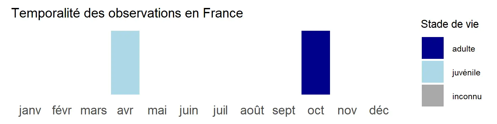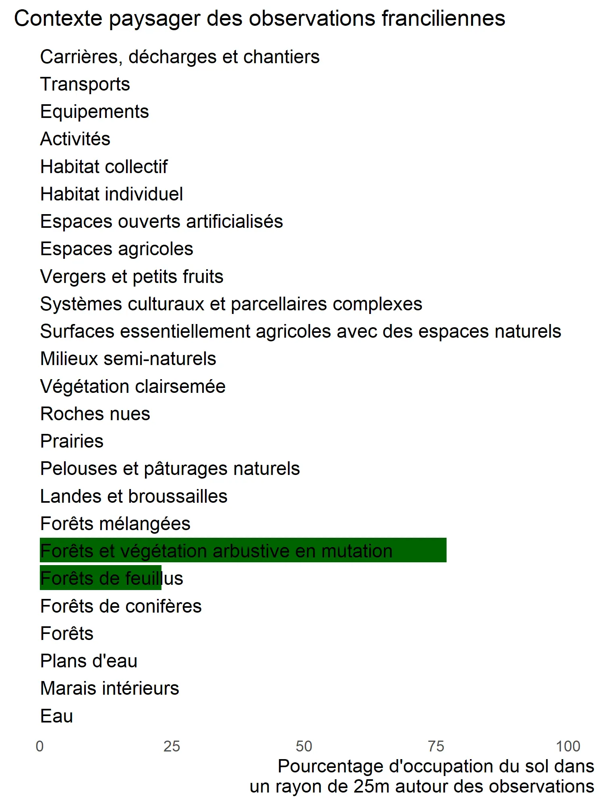
Pholcus phalangioides (difficulté 1) LC
Taille du corps:
7-10 mm (♂) / 7-8 mm (♀)
Confusions possibles :
Holocnemus
Holocnemus

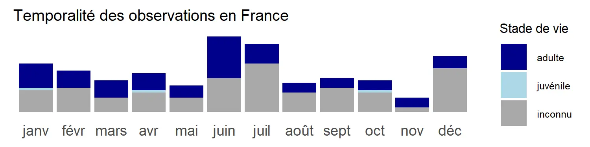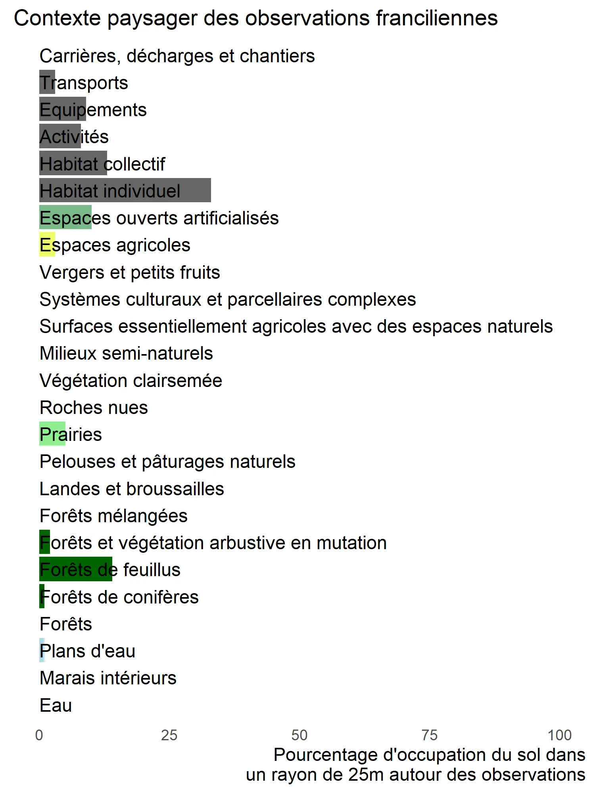
Psilochorus
1 espèce en Île-de-France identifiable à vue
Psilochorus simoni (difficulté 2)
Taille du corps:
1.9-3.0 mm (♂) / 1.9-3.0 mm (♀)
Confusions possibles :
Holocnemus, Pholcus
Holocnemus, Pholcus
Mâle :
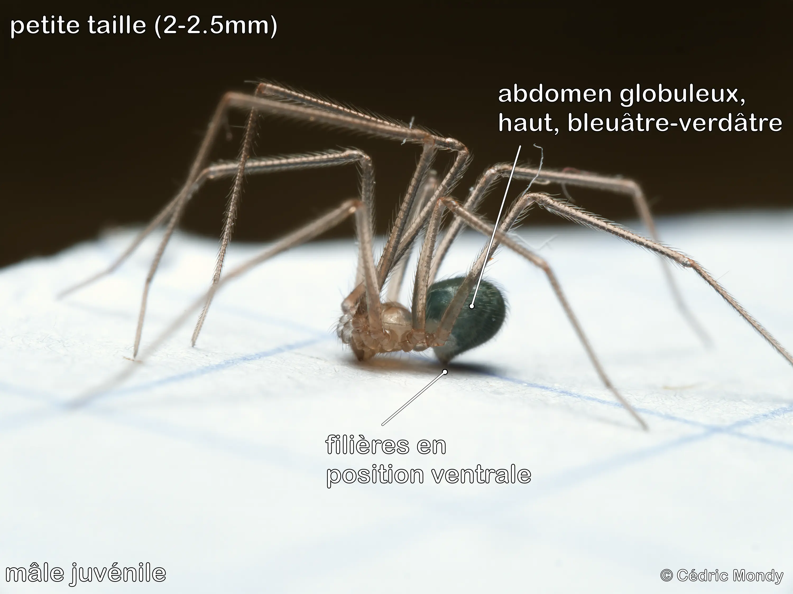
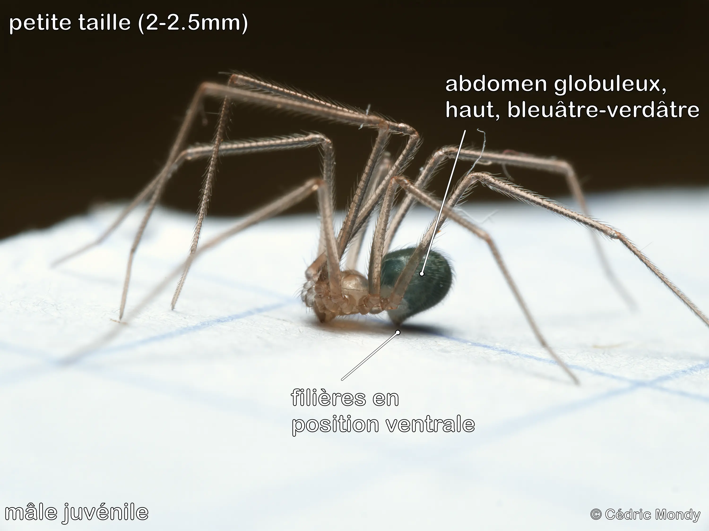

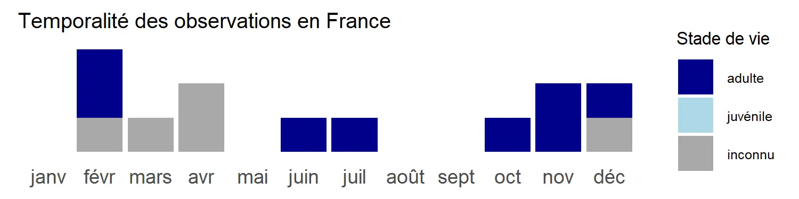
×